Introduction to Braille
Super Basics
Firstly, think of braille as the same ABC alphabet that we use in English, but made for touch reading. Each braille character, or cell is made of up to six dots. With braille characters representing letters, you can write anything in English (and many languages). Braille works by creating tactile shapes the blind can learn to read by touch.
Dots are simple; they are either raised or not, and they should always be the same size and depth. The dot arrangement is also very regimented; characters are arrangements of a 2x3 grid of cells, an arrangement of two dots wide by three dots high. Specific dots are referred to by number. The three left dots are 1, 2, and 3, and the three rights dots are 4, 5, and 6. A letter d is called a "dot 1 4 5."
 dot
dot cell
cell- the letter r
There are only so many combinations a 2x3 grid can create. Most often a cell represents letters or punctuation marks, but often enough more than one cell is used to represent a character. Cells flow from left to right forming phrases and sentences, overflowing onto new lines top to bottom to fill pages of text, just like print.
 ?a question mark
?a question mark- radical!radical!
Letters
Letters A to J
Braille’s first ten letters use only the top four dots.
a
b
c
d
e
f
g
h
i
j
Letters K to T
The second set of letters repeats the same dots as letters A to J but adds the bottom left dot.

k
l
m
n
o
p
q
r
s
t
Letters U to Z (and W)
The end of the alphabet follows the same pattern again, with these characters adding the bottom dots to the letters A to E. W is a weird one though...
The letter W resembles a J, but adds the bottom right dot, instead of both bottom dots (like its end-of-of-the-alphabet neighbors).
So why is W out of place like this? Blame France; When braille was invented there, France hadn't adopted the letter.

u
v
x
y
z
w
Numbers
Basic numbers are written by using the number symbol which converts letters A (for 1) through J (for 0). The number prefix starts the number format, then things return to letters after a space. Texts with lots of math are usually written in a specialized braille code called Nemeth Braille.
 #a1
#a1 #b2
#b2- #c3
 #d4
#d4- 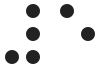#e5
 #f6
#f6- 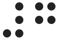#g7
 #h8
#h8 #i9
#i9 #j0
#j0
Formatting and styling
Capital and italic letters are created using special characters along with the letters described above.
Capitals
A capital sign signals that an uppercase character is next. Use it once for an initial cap, twice to capitalize the whole word. Three starts an uppercase passage, with two more ending it.
- ↑↑
 ↑CapCap
↑CapCap- ↑↑WORDWORD
Italics
Italics use an italic symbol followed by a second character that indicates how much text will be italicized.
italic character
n
italic word
begin passage
end passage
Punctuation
Sentence punctuation
Punctuate sentences by following them with these characters.

.
,
!
?
:
;
Quotation marks
Quotes are opening and closing signs that enclose a word or words.

“
”
‘
’
Parentheses and other enclosures
Parenthesis and brackets are opening and closing signs that enclose a word or words.

(
)- 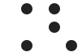
[ - 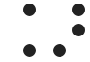
]
Other punctuation
Hyphens, dashes, apostrophes, asterisks, and ellipses can be placed anywhere.

-
–
‘
*
/
…
Currency
Currency symbols such as the dollar, pound, euro, and yen are created with a currency sign (dot 4), followed by the letter depicted in the print symbol.

currency sign
$
€
£
¥
Contractions
To communicate efficiently, English braille uses letters and special characters called contractions, which save space and effort similar to textspeak or SMS language. Braille books can get large, so contractions can help reduce text length by as much as 300%.
Some contractions are only valid as whole words, and some are only used as suffixes or prefixes and are indicated here. A great way to see how contractions work is to try our Contraction Composer feature.
A contractions !
 ababout
ababout- 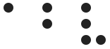abvabove
- acaccording
 acracross
acracross- afafter
 afnafternoon
afnafternoon afwafterward
afwafterward agagain
agagain- 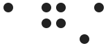agdot*16against
 almalmost
almalmost alralready
alralready alalso
alalso- 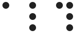aldot*1456although
 altaltogether
altaltogether- alwalways
 dot*46e⌂ance
dot*46e⌂ance- &and
 dot*345ar
dot*345ar zas
zas
B contractions
 dot*23⌂bb⌂
dot*23⌂bb⌂ dot*23be or be⌂
dot*23be or be⌂- dot*23cbecause
- 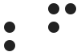dot*23fbefore
 dot*23hbehind
dot*23hbehind- dot*23lbelow
- 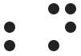dot*23nbeneath
 dot*23sbeside
dot*23sbeside dot*23tbetween
dot*23tbetween- 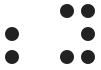dot*23ybeyond
 blblind
blblind- 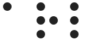brlbraille
- bbut
C contractions
- ccan
 dot*456ccannot
dot*456ccannot- dot*25⌂cc⌂
- dot*16ch
- dot*5dot*16character
 cdcould
cdcould dot*16child
dot*16child dot*16nchildren
dot*16nchildren- dot*25con⌂
- 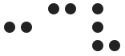dot*25cvconceive
 dot*25cvgconceiving
dot*25cvgconceiving
D contractions
- dot*5dday
- 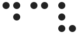dcvdeceive
 dcvgdeceiving
dcvgdeceiving dcldeclare
dcldeclare dclgdeclaring
dclgdeclaring- dot*256dis⌂
- ddo
E contractions
 dot*2⌂ea⌂
dot*2⌂ea⌂ dot*1246ed
dot*1246ed eieither
eieither dot*56en
dot*56en- dot*56e⌂ence
 dot*26enough
dot*26enough- dot*12456er
 dot*5eever
dot*5eever eevery
eevery
F contractions
- 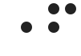dot*5ffather
 f⌂ff⌂
f⌂ff⌂- 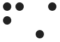fdot*34first
 dot*123456for
dot*123456for frfriend
frfriend ffrom
ffrom dot*56dot*123456⌂ful
dot*56dot*123456⌂ful
G contractions
 dot*2356⌂gg⌂
dot*2356⌂gg⌂- dot*126gh
 ggo
ggo gdgood
gdgood- 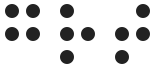grtgreat
H contractions
 dot*456hhad
dot*456hhad hhave
hhave- dot*5hhere
- 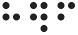hdot*12456fherself
- hmhim
- 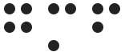hmfhimself
- dot*236his
I contractions
- immimmediate
- dot*35in
 dot*145ing
dot*145ing xit
xit- xsits
 xfitself
xfitself- 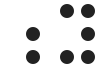dot*56y⌂ity
J contractions
 jjust
jjust
K contractions
- dot*5kknow
 kknowledge
kknowledge
L contractions
 dot*46s⌂less
dot*46s⌂less lrletter
lrletter- llike
 lllittle
lllittle dot*5llord
dot*5llord
M contractions
 dot*456mmany
dot*456mmany- 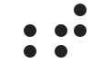dot*56t⌂ment
 mmore
mmore- 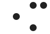dot*5mmother
 mdot*16much
mdot*16much mdot*34must
mdot*34must- 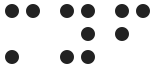myfmyself
N contractions
- 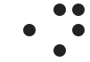dot*5nname
- 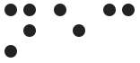necnecessary
 neineither
neineither- 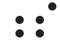dot*56s⌂ness
- nnot
O contractions
 dot*12356of
dot*12356of dot*5oone
dot*5oone dot*5ofoneself
dot*5ofoneself- 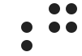dot*56g⌂ong
 dot*1256ou
dot*1256ou dot*5dot*1256ought
dot*5dot*1256ought- 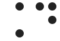dot*46d⌂ound
- 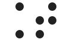dot*46t⌂ount
- 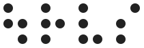dot*1256rvsourselves
- dot*1256out
 dot*246ow
dot*246ow
P contractions
- 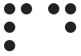pdpaid
- dot*5ppart
 ppeople
ppeople- 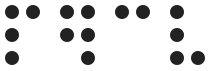pdot*12456cvperceive
- 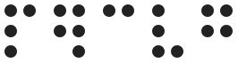pdot*12456cvgperceiving
 pdot*12456hperhaps
pdot*12456hperhaps
Q contractions
 dot*5qquestion
dot*5qquestion qkquick
qkquick- qquite
R contractions
 rrather
rrather- 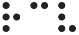rcvreceive
- 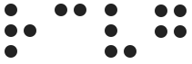rcvgreceiving
 rjcrejoice
rjcrejoice- 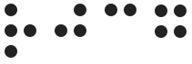rjcgrejoicing
 dot*5rright
dot*5rright
S contractions
- 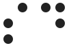sdsaid
- dot*146sh
- dot*146shall
 dot*146dshould
dot*146dshould dot*46n⌂sion
dot*46n⌂sion- sso
- dot*5ssome
 dot*456sspirit
dot*456sspirit- dot*34st
 dot*34still
dot*34still sdot*16such
sdot*16such
T contractions
- dot*1456th
 tthat
tthat- dot*2346the
- 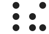dot*456dot*2346their
 dot*2346mvsthemselves
dot*2346mvsthemselves dot*5dot*2346there
dot*5dot*2346there dot*45dot*2346these
dot*45dot*2346these dot*1456this
dot*1456this- dot*45dot*1456those
 dot*5dot*1456through
dot*5dot*1456through dot*1456thyself
dot*1456thyself- dot*5ttime
- 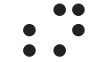dot*56n⌂tion
 tdtoday
tdtoday- tgrtogether
- 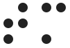tmtomorrow
- 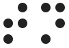tntonight
U contractions
 dot*5uunder
dot*5uunder- 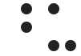dot*45uupon
- uus
V contractions
- vvery
W contractions
- dot*356was
- dot*2356were
 dot*156wh
dot*156wh dot*5dot*156where
dot*5dot*156where dot*156which
dot*156which dot*45dot*156whose
dot*45dot*156whose- wwill
 dot*23456with
dot*23456with dot*45wword
dot*45wword- dot*45wwork
- dot*456wworld
 wdwould
wdwould
Y contractions
 yyou
yyou- 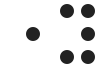dot*5yyoung
- 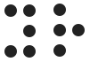yryour
 yrfyourself
yrfyourself yrvsyourselves
yrvsyourselves